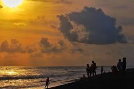
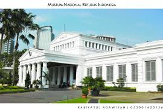

Maen Bareng Keluarga
Memasuki akhir tahun pastinya kita memikirkan satu kata yaitu liburan! Liburan bersama keluarga dan teman-teman menjadi pilihan yang tepat untuk kita.Tapi kadang kali kita bingung liburan tahun baru enaknya kemana? Pastinya kita memilih yang murah. Bahkan banyak di antara kita yang memilih negara wisata murah di Asia.
Nah kini kita tak perlu menghabiskan libur akhir tahun di tempat yang jauh. Ada banyak wisata yang murah dan ada di sekitar kita. Selain itu, kita bisa seru-seruan bersama seluruh anggota keluarga dan teman kita. Nah ini dia beberapa rekomendasi tempat yang bisa kita kunjungi saat liburan tahun baru. Tempat-tempat ini umumnya bisa mudah kita temukan di seluruh daerah di Indonesia kok.
*)pantai

Siapa sih yang tidak suka bermain atau berlibur ke pantai? Banyak orang yang senang bermain air dan juga menikmati pemandangan indah di pantai.
Sebagai negara maritim, tentunya Indonesia memiliki segudang pantai indah yang bisa kita kunjungi bersama teman-teman. Tidak hanya di Pulau Jawa, terdapat berbagai pantai indah mulai dari Sabang sampai Marauke.Salah satu yang terkenal adalah pantai di tempat wisata Belitung Timur.
Untuk tiket masuknya tentu tak perlu khawatir. Di kawasan pantai Selatan Yogyakarta saja misalnya, kamu hanya perlu merogoh kocek Rp20.000 untuk masuk ke berbagai pantai yang ada di sana. Wah pastinya semakin seru jika kita bermain bersama keluarga. Pastinya suasana tahun baru akan semakin meriah dengan aneka makanan laut yang dijual di sana.
*)Bukit

Jika tak senang pergi ke pantai, kita bisa memanfaatkan berbagai wisata alam yang berada di bukit. Suatu daerah umumnya memiliki daerah perbukitan yang tidak terlalu tinggi.
Namun, udara sejuk bisa kita dapatkan ketika kita berada di bukit tersebut. Tak hanya rasa sejuk saja, kita juga bisa melihat pemandangan lampu perkotaan dari atas. Wah, pastinya semakin membuat suasana jadi romantis.
Beberapa lokasi seperti Bukit Bintang di Yogyakarta atau pun daerah Joyogrand Malang bisajadi pilihan yang tepat. Di sekitarnya pun terdapat tempat camping di Jogja yang biasa digunakan. Biasanya kita hanya cukup membeli makanannya saja loh karena biasanya ada banyak warung atau pun resto yang bisa kita datangi untuk melihat cahaya perkotaan dari atas bukit.
*)Museum

jangan sangka museum adalah hal yang membosankan sebab di era digital sekarang kita bisa memanfaatkan berbagai sudut museum sebagai objek foto. Jika membawa anak, salah satu tempat wisata anak di Jakarta ini cocok sebagai tempat berlibur. Bagi pengguna instagram, pastinya akan sangat senang jika berfoto di tempat-tempat yang disebut instagramable.
Makin banyak museum yang diperbaharui dan dibuat menarik dan sedemikian rupa supaya kita sebagai pengunjung tertarik untuk mendatanginya. Salah satu museum yang terkenal adalah museum Bank Indonesia di Jakarta.
Museum ini bahkan sudah menggunakan teknologi audio visual. Wah keren deh pokoknya! Apalagi tiket masuknya juga terjangkau hanya dengan Rp 5000 kamu sudah bisa menikmati keseluruhan museum. Pastinya di daerahmu juga ada museum yang menarik bukan?
*)Alun-Alun

Hampir mirip dengan taman, namun alun-alun biasanya jauh lebih luas dan menawarkan liburan yang tidak biasa. Cobalah kamu bermain di alun-alun Kota Semarang yang biasa disebut dengan Simpang Lima. Alun-alun ini selalu ramai di setiap malam loh! Kita bisa menemui beberapa hiburan misalnya sepeda yang diberi lampu warna-warni.
*)